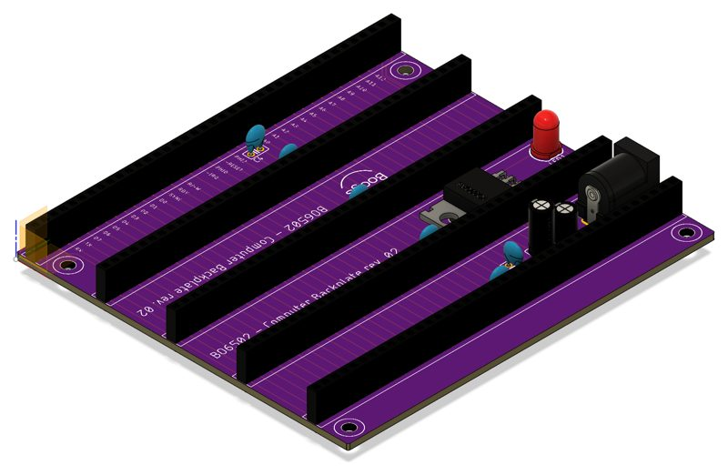

modular
BO6502
A modular computer on a 39-pin bus. Every function is a separate board plugged into a backplate, so the system can be rebuilt and extended.
- Switchable clock: 2 MHz, 1 MHz, 500 kHz
- RAM and ROM boards with jumpers to free space for I/O
- Video, serial, keyboard, SD card, audio, joystick and LCD boards